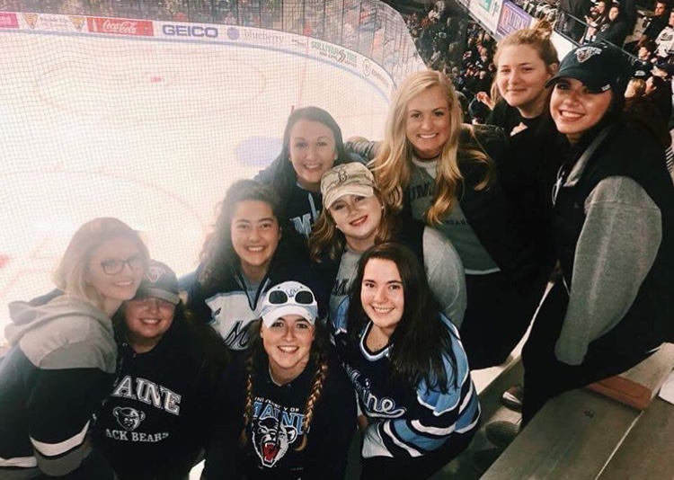
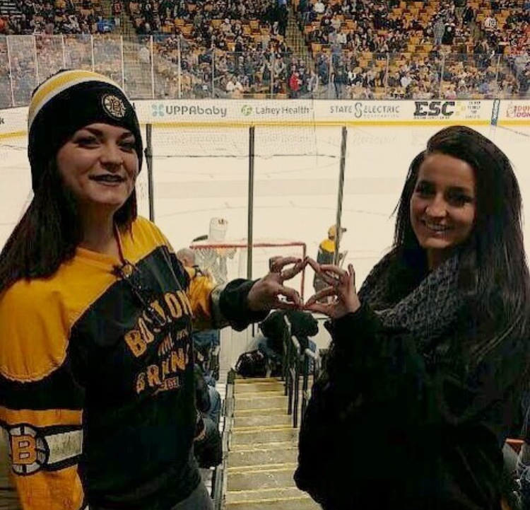

<!DOCTYPE html>
<html lang="en" xmlns="http://www.w3.org/1999/html">
<head>
    <meta charset="UTF-8">
    <title>Title</title>
</head>

</html>

<h1> <div style="text-align: center;"> <div style="background-color:#42478b;color:#ffcae1;padding:2%;">Sisters and Sports </div> </div> </h>
    <h2> <div style="text-align: center;"><div style="background-color:#42478b;color:#ffcae1;padding:2%;">Supporting UMaine teams, and our favorite New England teams</div> </h2>

    <body style="background-color:#9fc6ff;">

    <body>
    
    
    </body>

    <p style="background-color:#ffcae1;color:#9fc6ff;padding:2%;"> Sisters meet up to walk down to our home turf, The Alfond, as well as plan trips down to Boston to see our favorites, the Boston Bs and their Fenway neighbors the Red Sox. Occasionally we'll even travel all the way to the home of the original GOAT #12 </p>

    <nav>
        <ul>

            <li><a href="Sisterhood Explorations.html">Sisterhood Explorations</a></li>
            <li><a href="Service%20for%20CMNH.html">Service for CMNH</a></li>
            <li><a href="index.html">Return to Home Page</a></li>
        </ul>
    </nav>

    <p style="background-color:#ffcae1;color:#9fc6ff;padding:2%;"> While we love cheering on other teams, we also regularly participate in intramurals. Currently we are playing field hockey, though we play many more sports throughout the school year.
        <nav>